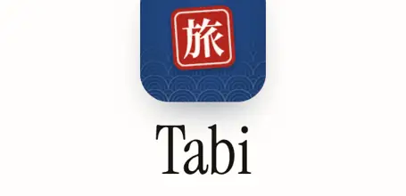

PRODUCT / DEVELOPMENT / UX
Tabi.
One place for the plan, the people and the money. A phone-first group trip planner.
- My role
- Solo designer & developer
- Team
- Solo
- Timeframe
- September 2026
- Technology
- JavaScript · Express · SQLite · Leaflet
- Platform
- Mobile-first web

01 / THE GOAL
What I set out to build.
Support different trips, group sizes and budgets without clutter, while keeping confirmed spending distinct from estimates.
02 / OWNERSHIP
My contribution.
- Designed and built multi-trip accounts, invite-only groups and viewer/editor roles.
- Built the day-by-day itinerary, map pins, budget views and budget-ceiling warning.
- Integrated currency conversion, weather and a home view that changes during a trip.
- Iterated on the code and visual design for a mobile-first, phone-app feel.
This is a solo project. The responsibilities above describe my own work.
03 / TECHNICAL BREAKDOWN
Under the surface.
An interactive summary of the documented work; not a source-level architecture diagram.
Plan
Itinerary and map pins for each day.
People
Invite-only groups with viewer/editor roles.
Money
Paid, committed and estimated costs remain distinct.
Design decision
Paid, committed and estimated costs are separate states: a guess should never read as money already spent. The home view changes from a countdown before the trip to today’s plan during it.
04 / DEVELOPMENT & VALIDATION
Build, observe, refine.
Process
A Japan trip provided the first real use. Later iterations broadened the product for different trips and groups, with repeated passes on the code and interface.
Testing
[CONTENT NEEDED] Add anonymised usability notes and a before/after screen comparison.
05 / OUTCOME & REFLECTION
What came out of it.
A live, invite-only web app. The public link opens its sign-in screen.
The project demonstrates product thinking alongside implementation: permissions, financial clarity and information hierarchy all affect how useful the same data is on a phone.
Evidence still to add
- Anonymised product screens
- Verified public source link
- Usability evidence and outcomes